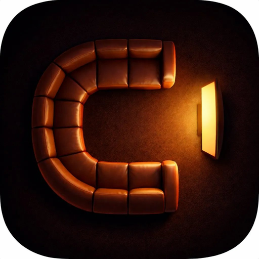

The everyday lockup. Use for app store header, website nav, splash screen, social profile cover. Subtle warm halo behind the C adds firelight depth without competing.

#f5ede1 · Background warm-dark radial #1c1612 → #0d0a08rgba(217,122,60,0.20) → transparent at 35% radius.
Square or portrait contexts: splash screen, social profile cover, app store badge, sticker. Same Fraunces typeface, no halo (cleaner stacked).
#f5ede1 · Background #14110f (flat warm dark)Light-background variant for print, business cards, light marketing. The C-icon's rich shadows still pop on cream because of its dark contrast. Wordmark in deep cognac matches the leather tone.
#5b3a22 (deep cognac, matches leather mid-tone) · Background #f1e6d3 (warm cream, NOT pure white)Cinematic alternative — Instrument Serif italic at large scale. The wordmark dominates more, like a movie title card. Use for hero moments (splash, pitch decks, big marketing). Probably TOO loud for everyday navbar.
#f5ede1 · Background warm-dark radial.